Sunny Spot Cat
قطة صغيرة تعيش فوق نوافذك (Mac وWindows).
- مجاني
- بلا إعلانات
- لا يجمع أي بيانات
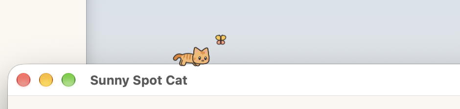
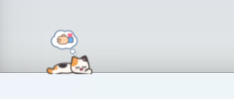
قرابة رأس كل ساعة، تجتمع القطط
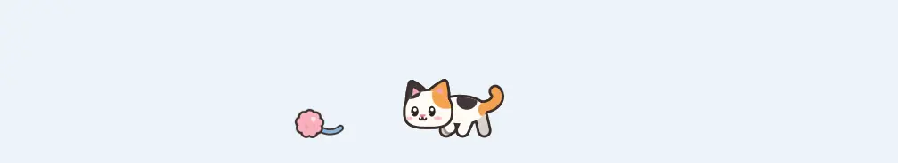
كل يوم مختلف قليلًا
قيلولة وعجن ولعب. بتلات في الربيع، وكوبية في الأيام الممطرة، ومهرجانات في الصيف، وأوراق تتساقط في الخريف، وثلج في الشتاء. ومع تبدّل الفصول يتغير المنظر والألعاب أيضًا.
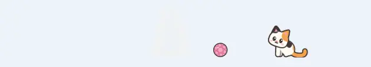
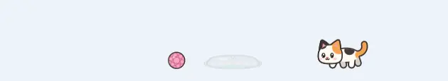
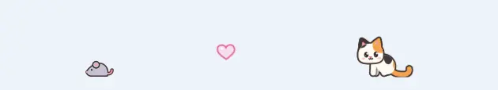
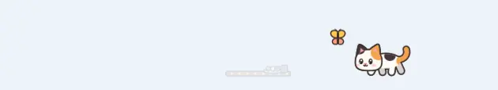
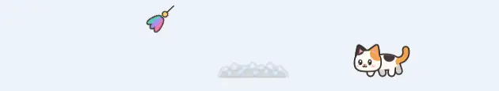
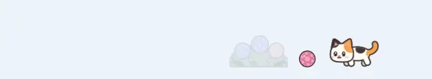
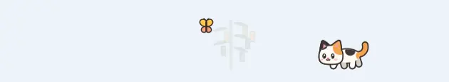
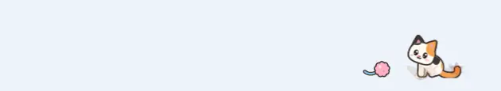
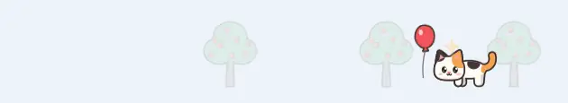
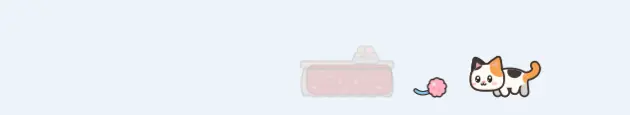
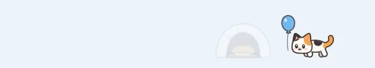
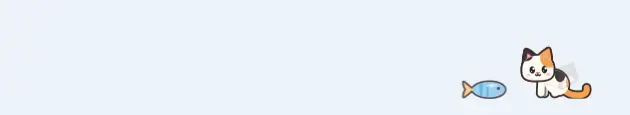
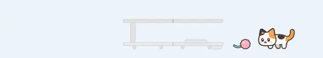
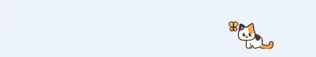
الأسئلة الشائعة
أين القائمة؟
على Mac، انقر على رمز الكفّ في شريط القائمة. على Windows، انقر على رمز الكفّ في شريط المهام (إن لم تره، فهو داخل «^»)، أو انقر بزر الماوس الأيمن على القطة.
كيف أستخدمه؟
اختر «جرّب طريقة الاستخدام» من القائمة، وسيرشدك خطوة بخطوة.
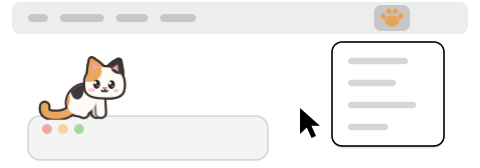
لا أرى القطة.
تأكّد من تفعيل «اللعب فوق النوافذ» في القائمة. وإذا لم تكن هناك نوافذ مفتوحة، تجلس القطة على Dock أو على شريط المهام.
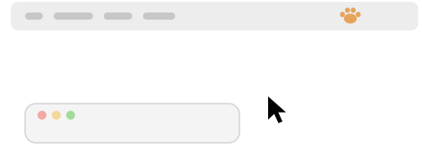
هل تجمعون أي بيانات؟
لا. كل شيء يبقى على جهازك.
هل هو مدفوع؟
جميع الميزات مجانية، و«ادعم» اختياري.